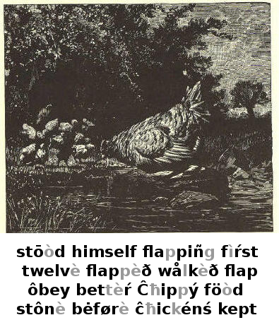
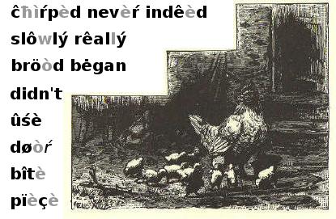
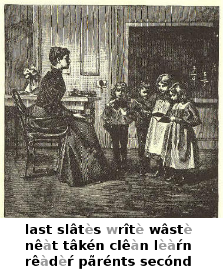

Τħeŕè waswoś oncewuns a big, wħîtè hen τħat had twelvè littlè ĉħickénś. Τħey wèŕè verý småll, and τħé ôld hen tōòk gōòd cãŕè ofuv τħem. Ŝħê fõùnd föòd før τħem in τħé dâytîmè, and at nîgħt kept τħem undèŕ hèŕ wiñgś.
Onewun dây, τħis ôld hen tōòk hèŕ ĉħickénś dõwn tö a småll brōòk. Ŝħê πħøùgħt τħé ãìŕ fróm τħé wåtèŕ wōùld dö τħem gōòd.
Wħen τħey got tö τħé brōòk, τħey wålkèð on τħé bañk a littlè wħîlè. It waswoś verý prėttý on τħé őτħèŕ sîdè ofuv τħé brōòk, and τħé ôld hen πħøùgħt ŝħê wōùld tâkè hèŕ ĉħildrén ôvèŕ τħeŕè.
Τħeŕè waswoś a lārĝè stônè in τħé brōòk: ŝħê πħøùgħt it wōùld bê êàśý før τħem tö jump tö τħat stônè, and fróm it tö τħé őτħèŕ sîdè.
Sô ŝħê jumpèð tö τħé stônè, and tôld τħé ĉħildrén tö cőmè aftèŕ hèŕ. Før τħé fìŕst tîmè, ŝħê fõùnd τħat τħey wōùld not ôbey hèŕ.
Ŝħê flappèð hèŕ wiñgś, and crîèd, "Cőmè hėŕè, åll ofuv yöù! Jump upon τħis stônè, aś Î did. Wê can τħen jump tö τħé őτħèŕ sîdè. Cőmè nõw!"
"Ô mőτħèŕ! wê can't, wê can't, wê can't!" sãìd åll τħé littlè ĉħickénś.
"Yes yöù can, if yöù trŷ," sãìd τħé ôld hen. "Just flap yøùŕ wiñgś, aś Î did, and yöù can jump ôvèŕ."
"Î am flappiñg mŷ wiñgś," sãìd Ĉħippý, whö stōòd bŷ himself; "but Î can't jump ãný bettèŕ τħan Î cōùld bėførè."

"Î nevèŕ såw suĉħ ĉħildrén," sãìd τħé ôld hen. "Yöù dôn't trŷ at åll."
"Wê can't jump sô fār, mőτħèŕ. Indêèd wê can't, wê can't!" chìŕpèð τħé littlè ĉħickénś.
"Well," sãìd τħé ôld hen, "Î must givè it up." Sô ŝħê jumpèð back tö τħé bañk, and wålkèð slôwlý hômè wiτħ hèŕ bröòd.
"Î πħiñk mőτħèŕ askèð töò muĉħ ofuv us," sãìd onewun littlè ĉħickén tö τħé óτħèŕś.
"Well, Î trîèd," sãìd Ĉħippý.
"Wê didn't," sãìd τħé óτħèŕś; "it waswoś ofuv nô ûsè tö trŷ."
Wħen τħey got hômè, τħé ôld hen bėgan tö lōòk ábõùt før sőmèπħiñg tö êàt.
Ŝħê söòn fõùnd, nėàŕ τħé back døòŕ, a pïèçè ofuv breàd.
Sô ŝħê cållèd τħé ĉħickénś, and τħey åll ran up tö hèŕ, êàĉħ onewun trŷiñg tö get a bîtè at τħé pïèçè ofuv breàd.
"Nô, nô!" sãìd τħé ôld hen. "Τħis breàd iś før Ĉħippý. Hê iś τħé ônlý onewun ofuv mŷ ĉħildrén τħat rêallý trîèd tö jump tö τħé stônè."

Wê havè cőmè tö τħé last lessón in τħis bōòk. Wê havè finiŝħèð τħé Fìŕst
Rêàdèŕ.
Yöù can nõw rêàd åll τħé lessónś in it, and can wrîtè τħem on yøùŕ slâtès.
Havè yöù tâkén gōòd cãŕè ofuv yøùŕ bōòk? Ĉħildrén ŝħōùld ålwâyś kêèp τħeìŕ bōòks nêàt and clêàn.
Ārè yöù not glad tö bê reàdý før a nëw bōòk?
Yøùŕ pãrénts ārè verý kînd tö send yöù tö scħöòl. If yöù ārè gōòd, and if yöù trŷ tö lèàŕn, yøùŕ têàĉħèŕ will lővè yöù, and yöù will plêàśè yøùŕ pãrénts.
Bê kînd tö åll, and dö not wâstè yøùŕ tîmè in scħöòl. Wħen yöù gô hômè, yöù mây ask yøùŕ pãrénts tö get yöù a Secónd Rêàdèŕ.
Loñg Vôcálś
Sõùnd aś in Sõùnd aś in â âtè ŕ èŕr ãŕ cãŕè î îçè ā ārm ô ôdè a last û ûśè å åll û bùŕn ê êvè öò föòl
Ŝħørt Vôcálś
a am o odd e end u up i in oo lōòk
Diþħπħoñgs
σì σìl õù õùt σy bσy õw nõw
Aspìŕâtès
f fïfï t tat h him ŝħ ŝħê k kîtè ĉħ ĉħat p pîpè πħ πħick s sâmè
Subvôcálś
Sõùnd aś in Sõùnd aś in b bib v valvè d did τħ τħis g gig z zin j jug z azùŕè n nînè r rãŕè m mâìm w wê n hañg y yet l lull
Substítütès
Sub før aś in Sub før aś in a ô wħát ų i mųπħ ê a τħeŕè c k can ê a feint ç s çîtè î ê pólïçè ćħ ŝħ ćħâìśè î ê sìŕ cħ k cħâos ô û sőn ĝ j ĝem ô oo tö ñ ñg iñk ô oo wōlf ś z aś ô a førk ŝ ŝħ ŝūrè ô û wòŕk x gz ėxact û oo fūll û oo rüdè þħ f þħôtô y î flŷ q k pïqùè ü w qυit
End ofuv Mcguffey*'s Fìŕst Ėclectic Rêàdèŕ, Rėvîśèd Ėdiţìòn, bŷ Willĩám Hôlmèś Mcguffey*